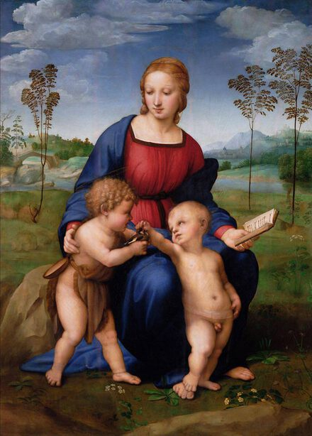

Raphael,1483 – 1520,High Renaissance,Italian,"Raffaello Sanzio da Urbino (Italian: [raffaˈɛllo ˈsantsjo da urˈbiːno]; March 28 or April 6, 1483 – April 6, 1520), known as Raphael (, US: ), was an Italian painter and architect of the High Renaissance. His work is admired for its clarity of form, ease of composition, and visual achievement of the Neoplatonic ideal of human grandeur. Together with Michelangelo and Leonardo da Vinci, he forms the traditional trinity of great masters of that period.Raphael was enormously productive, running an unusually large workshop and, despite his death at 37, leaving a large body of work. Many of his works are found in the Vatican Palace, where the frescoed Raphael Rooms were the central, and the largest, work of his career. The best known work is The School of Athens in the Vatican Stanza della Segnatura. After his early years in Rome much of his work was executed by his workshop from his drawings, with considerable loss of quality. He was extremely influential in his lifetime, though outside Rome his work was mostly known from his collaborative printmaking.",https://en.wikipedia.org/wiki/Raphael,109
